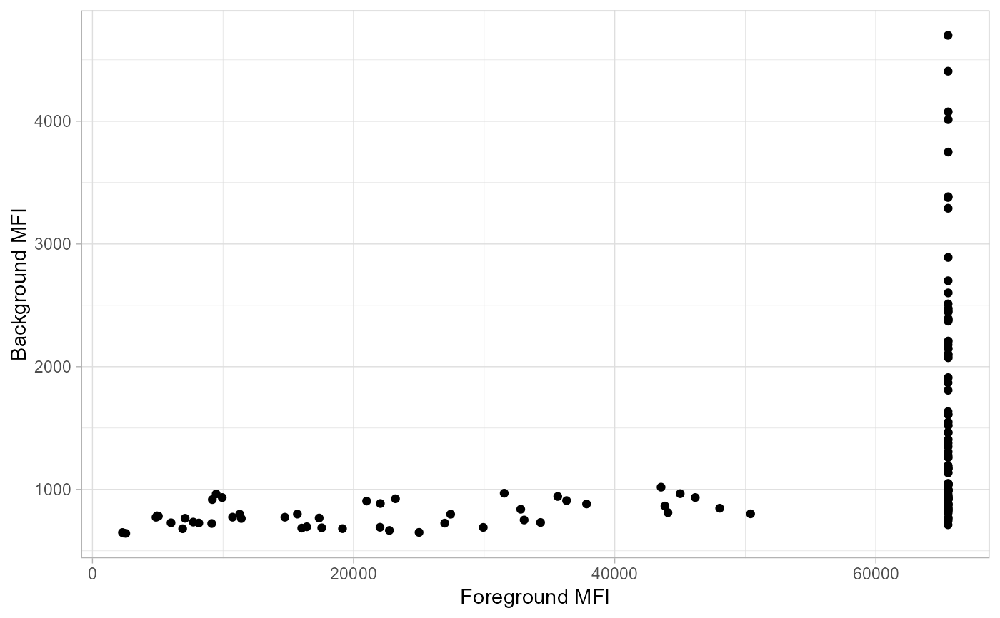

A generic function for plotting the background and foreground values.
plot_FB(
df,
antigen_name = "antigen",
bg_MFI = "BG_Median",
FG_MFI = "FBG_Median",
log_mfi = FALSE
)An object containing the data to which the plot is done.
The variable describing which features/proteins/
antibodies in the data should be used to plot
A numeric variable describing which is the
background MFI
A numeric variable describing which is the
foreground MFI
a logical value indicating whether the MFI values should be log transformed or not.
a ggplot of foreground vs background MFI values
Plot foreground and background values
## Not run:
#After extracting the background using \code{\link{extract_bg}}
#we plot the data using
allData_bg <- readr::read_csv(system.file("extdata",
"bg_example.csv", package="protGear"))
#> Rows: 126 Columns: 6
#> ── Column specification ────────────────────────────────────────────────────────
#> Delimiter: ","
#> chr (2): sampleID, antigen
#> dbl (4): Block, FBG_Median, BG_Median, replicate
#>
#> ℹ Use `spec()` to retrieve the full column specification for this data.
#> ℹ Specify the column types or set `show_col_types = FALSE` to quiet this message.
plot_FB(allData_bg,
antigen_name = "antigen",
bg_MFI = "BG_Median", FG_MFI = "FBG_Median", log = FALSE
)

## End(Not run)